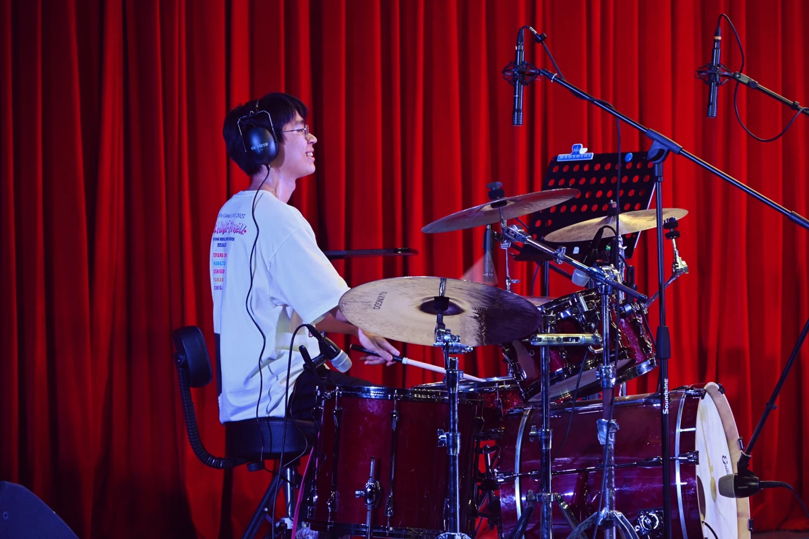

HOG WAM
My latest research project in robot learning. More details will be shared with the upcoming preprint.
arXiv forthcoming
Robot learning.
Room for rhythm.
I am a PhD student at the School of AI for Science, Peking University, advised by Prof. Weihao Yu (余伟浩) in IPP Lab.
My research interests lie in robot learning, visual representations, and generalization. Away from research, you will find me listening to ACG music or learning my way around a drum kit.

Selected work in robotics
and embodied intelligence.
My latest research project in robot learning. More details will be shared with the upcoming preprint.
 ET-SEED
ET-SEED
Learning manipulation policies with spatial symmetry for data-efficient learning and generalization to unseen configurations.
Growing, learning, and following
my curiosity at Peking University.
Peking University
Advised by Prof. Weihao Yu · IPP Lab
Peking University

Japanese animation, ACG music, and a growing love for the drums. I’m a fan of Poppin’Party and Sāya Yamabuki — here’s a little corner for both.
Still learning the drums.
One song, one small step at a time.

For research, code, or a shared love of music.